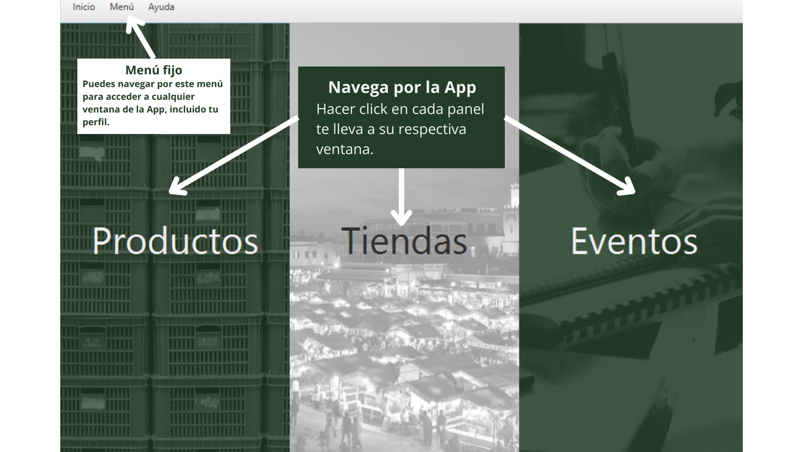

Esta es la ventana general de Market Maler

Para mayor información consultar el manual.
Funcionalidades Principales:
- Navegación: Puedes acceder a diferentes secciones de la aplicación utilizando los botones y la barra de menú.
- Menú: Ofrece accesos directos a las secciones como Productos, Tiendas, Eventos, Perfil y Cerrar Sesión.
- Botones de Acceso Rápido: Los botones de "Productos," "Tiendas" y "Eventos" te llevan directamente a esas secciones cuando haces click en ellos.
Recuerda que en la barra de menú, puedes encontrar opciones para cerrar sesión, regresar a la pantalla de inicio y acceder a la sección de ayuda.
Consejos:
- Perfil: En la sección "Perfil," puedes ver y modificar información personal.
- Cerrar Sesión: Utiliza la opción "Cerrar Sesión" en el menú para salir de tu cuenta.